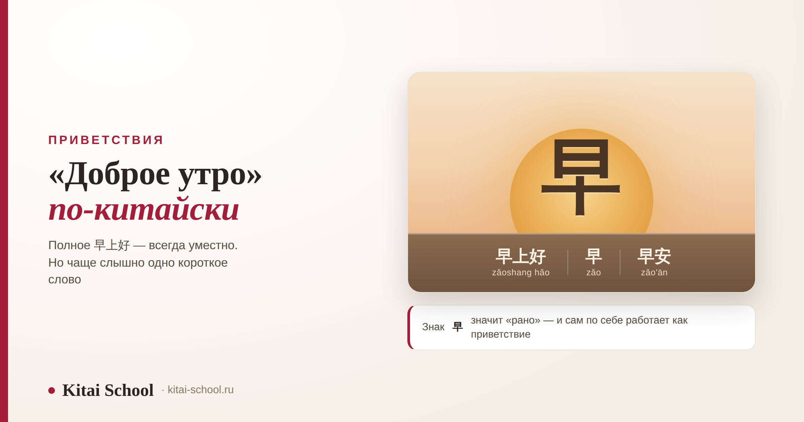
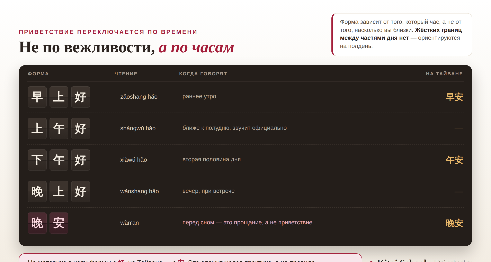

Приветствия
«Доброе утро» по-китайски: 早上好, короткое 早 и чем от них отличается 早安


Полный ответ — 早上好, zǎoshang hǎo, и эта форма не подведёт никогда. Но если прийти утром в китайский офис, услышите вы чаще другое: короткое 早. А в переписке с тайваньскими коллегами — третье: 早安. Разница между ними не в вежливости, и это главное, что стоит понять с самого начала: утреннее приветствие в китайском выбирают по часам, а не по тому, насколько вы близки с собеседником.
Полная форма — 早上好 zǎoshang hǎo, уместна везде. Короткая — 早 zǎo, между своими. Третья — 早安 zǎo'ān, на материке реже, на Тайване основная. Граница утра — полдень: после него говорят 下午好. 晚安 приветствием не бывает: это пожелание перед сном.
Короткий ответ: как будет «доброе утро»
Три формы, и каждая со своим местом.
- 早上好 zǎoshang hǎo — полная. Подходит всем и всегда.
- 早 zǎo — короткая. Коллегам, соседям, однокурсникам.
- 早安 zǎo'ān — та же мысль с другим вторым знаком. На Тайване — основная форма.
- 上午好 shàngwǔ hǎo — для времени ближе к полудню, звучит официально.
Если нужно приветствие, которое вообще не зависит от времени суток, это 你好. Как оно устроено, кому его говорят и что на него отвечают — тема отдельная и большая: что отвечать на «нихао» и кому его говорят. Здесь же — только утро и то, что с ним граничит.
早 — самое короткое и самое частое
Знак 早 значит «рано». Этого хватает: одно слово работает как полноценное приветствие.
Так здороваются там, где люди видятся каждый день: в офисе, в общежитии, в подъезде, в университетской аудитории. Сказать коллеге полное 早上好 каждое утро можно, но звучать это будет чуть подчёркнуто — примерно как если бы вы каждое утро говорили «доброе утро, Иван Петрович» вместо обычного «утро».
А вот где короткое 早 не годится:
- При первой встрече — здесь нужна полная форма или 你好.
- Со старшим по возрасту или положению, если отношения пока не близкие.
- В официальной обстановке — на совещании, на встрече с партнёрами, в начале выступления.
Деловая обстановка вообще требует отдельного словаря — он собран здесь: китайский для делового общения.
早上好 и 早安: в чём разница
Эти две формы значат одно и то же, а различаются вторым знаком — и тем, где их чаще услышишь.
- В 早上好 второй знак — 好 «хорошо». Получается «раннее утро хорошо».
- В 早安 второй знак — 安 «покой». Получается пожелание спокойного утра.
Географию стоит знать. На материке привычный набор — 早上好, 下午好, 晚上好; 早安 там слышно заметно реже. На Тайване система другая: 早安, 午安, 晚安, а формы с 好 почти не используются.

Где заканчивается утро
Вот место, где ошибаются чаще всего, и дело здесь не в вежливости, а во времени на часах.
У китайского утра есть две части. 早上 — раннее утро, то самое время, когда люди только пришли. 上午 — время до полудня, уже рабочее, не раннее. Жёсткой границы между ними нет, и у разных людей она проходит чуть по-разному. А после полудня начинается 下午, и там уже 下午好.
Отдельно стоит 上午好. Формально это «доброе утро» для второй половины утра, но по ощущению форма более официальная, чем 早上好, и в быту между знакомыми её почти не услышишь. Зато она привычна там, где речь заранее подготовлена: в объявлениях, в начале выступления, в обращении к залу. Если вы открываете встречу в одиннадцать утра, 上午好 будет ровно тем, чего от вас ждут; если здороваетесь с соседом в то же самое время — достаточно короткого 早.
Первые месяцы в Китае я писала коллегам 早安. Форма попалась мне в учебных материалах, выглядела аккуратно, и я считала её совершенно нейтральной.
Отвечали мне при этом всегда иначе: 早上好 или просто 早. Я списывала это на то, что люди спешат.
Пока одна коллега не спросила напрямую: вы по тайваньским материалам учились? Я удивилась — вроде бы нет. Оказалось, что одно короткое приветствие рассказало обо мне больше, чем я собиралась рассказывать: так на материке пишут нечасто.
С тех пор я проверяю не только значение формы, но и то, где она в ходу. Это не вопрос правильности — и ту и другую поймут. Это вопрос того, хотите ли вы, чтобы ваш китайский звучал как из нужного места. С учениками мы разбираем это сразу, на первых же репликах.
Практический вывод простой: ориентируйтесь на полдень. До него — утренние формы, после — дневные. В одиннадцать утра сказать 早上好 ещё можно, и никто не поправит; в час дня это прозвучит так же, как русское «доброе утро» в обеденный перерыв.
Само деление суток в китайском устроено подробнее, чем кажется, и разобрано отдельно вместе с часами и минутами: как называть время по-китайски.
Весь день по часам
Чтобы не держать это в голове кусками — вся система в одной таблице.
| Форма | Чтение | Когда говорят | На Тайване |
|---|---|---|---|
| 早上好 | zǎoshang hǎo | раннее утро | 早安 |
| 上午好 | shàngwǔ hǎo | ближе к полудню; звучит официально | — |
| 中午好 | zhōngwǔ hǎo | около полудня; встречается заметно реже остальных | — |
| 下午好 | xiàwǔ hǎo | вторая половина дня | 午安 |
| 晚上好 | wǎnshang hǎo | вечер, при встрече | — |
| 晚安 | wǎn'ān | перед сном; это прощание, а не приветствие | 晚安 |
Последняя строка — единственная в списке, которой не здороваются. 晚安 говорят, расходясь на ночь, и при встрече вечером она звучит так же странно, как «спокойной ночи» вместо «добрый вечер». Про то, как вообще заканчивают разговор по-китайски, есть отдельный разбор: как попрощаться на китайском.
Утро в переписке
В чатах утреннее приветствие живёт по своим законам, и они проще устных.
Обычное дело — написать коллеге или однокурснику короткое 早, иногда с частицей: 早啊. Это ровно то же самое, что наше «утро!» в рабочем чате. В деловой переписке форма полная, и к ней добавляется обращение — как именно, разобрано здесь: деловое письмо китайскому партнёру.
Отдельное явление, с которым сталкивается каждый, у кого в контактах есть китайцы старшего поколения, — утренние картинки. Это изображения с цветами, пейзажами и крупной надписью 早安, которые рассылают знакомым по утрам. Данных о том, насколько это распространено, я не нашла, поэтому цифр не будет: скажу лишь, что для многих это способ ежедневно отметиться и показать, что всё в порядке. Отвечать на такое принято тем же — короткой репликой или такой же картинкой.
Остальной язык переписки — отдельная история со своими сокращениями и цифрами: китайский интернет-сленг.
Три ошибки с утренним приветствием
Все три я вижу у начинающих постоянно.
| Ошибка | Как лучше |
|---|---|
| Здороваются вечером словом 晚安 | при встрече — 晚上好; 晚安 оставьте на момент, когда расходитесь |
| Переводят «доброе утро» дословно | порядок в китайском обратный: сначала время, потом 好. Не «хорошее утро», а «утро хорошо» — 早上好 |
| Говорят 早上好 днём | после полудня — 下午好; если сомневаетесь, какое уже время, скажите 你好 |
Четвёртая, негласная, — вообще не здороваться, считая, что без языка лучше промолчать. Короткое 早 выговорит кто угодно на второй день изучения, и оно работает: люди замечают не акцент, а то, что вы поздоровались. О том, почему в китайском общении форма вообще так важна, есть отдельный текст: как общаются китайцы.
Выучить четыре формы можно за вечер, а вот привычка выбирать нужную — по времени, по обстановке, по тому, кто перед вами — ставится только на живых репликах. С этого мы и начинаем занятия. Посмотреть программу можно здесь: онлайн-курсы китайского. Если главная задача — заговорить, есть курс по разговорной речи. Оставить заявку или написать в Telegram.
Частые вопросы (FAQ)
Как будет «доброе утро» на китайском?
早上好, в пиньине zǎoshang hǎo. Это полная форма, и она уместна в любой обстановке: с соседом, с коллегой, с преподавателем. В обиходе её часто сокращают до одного знака — 早 (zǎo), что буквально значит «рано». Есть и третья форма, 早安 (zǎo'ān), но на материке она звучит реже.
Чем 早安 отличается от 早上好?
Вторым знаком и тем, где эту форму чаще слышно. В 早上好 стоит 好 «хорошо», в 早安 — 安 «покой». На материке привычнее набор с 好: 早上好, 下午好, 晚上好. На Тайване принята другая система — 早安, 午安, 晚安, а формы с 好 там почти не используются. Это сложившаяся практика, а не правило: вас поймут в любом случае.
Можно ли сказать просто 早?
Да, и так говорят постоянно — между коллегами, соседями, однокурсниками. Это не грубость, а обычная краткость, как наше «утро!» вместо «доброе утро». Но в официальной обстановке, при первой встрече и в разговоре со старшим по возрасту или положению лучше взять полную форму: 早上好.
До какого времени говорят 早上好?
Жёсткой границы нет, и у разных людей она чуть разная. Ориентир простой — полдень: 早上 это раннее утро, дальше начинается 上午, то есть время до полудня, а после него говорят уже 下午好. В одиннадцать утра никто не поправит, а вот в час дня 早上好 прозвучит странно.
Говорят ли 中午好?
Такая форма есть, но встречается заметно реже остальных: промежуток вокруг полудня короткий, и его обычно закрывают соседними приветствиями — либо 上午好, либо 下午好. Если сомневаетесь, какое время уже наступило, безопаснее сказать 你好: оно не привязано ко времени суток вообще.
Почему 晚安 не говорят при встрече?
Потому что это не приветствие, а пожелание перед сном — примерно как русское «спокойной ночи». При встрече вечером говорят 晚上好. Ошибка эта у начинающих очень частая, потому что обе формы начинаются с 晚 «вечер», а разница держится на втором знаке: 好 «хорошо» против 安 «покой».
Пусть день начинается легко! 早上好！
Источники
- Значения знаков и форм: 早 «рано», 安 «покой», формы 早上好, 早安, 上午好, 中午好, 下午好, 晚上好, 晚安 — по словарным данным.
- Разница между материковым набором (формы с 好) и тайваньским (формы с 安) приводится по справочным материалам и обсуждениям носителей. Это описание сложившейся практики, а не норма из справочника, и в тексте это оговорено отдельно.
- Границы между 早上, 上午 и 下午 жёстко не закреплены; в статье дан единственный надёжный ориентир — полдень. Точных часов я намеренно не называю.
- Про рассылку утренних картинок с 早安: явление описано в публикациях и наблюдается у пользователей мессенджеров, но надёжных данных о распространённости нет, поэтому ни процентов, ни оценок в статье не приводится.
- Происхождения формы 早安 и дат её появления я не нашла в надёжных источниках, поэтому их здесь нет.
- Утверждений о запретах в статье нет: все различия между формами — вопрос частотности и уместности, а не правильности.
- Практика Kitai School: какие формы приносят ученики, по каким материалам они учились и что из этого слышно в их речи.